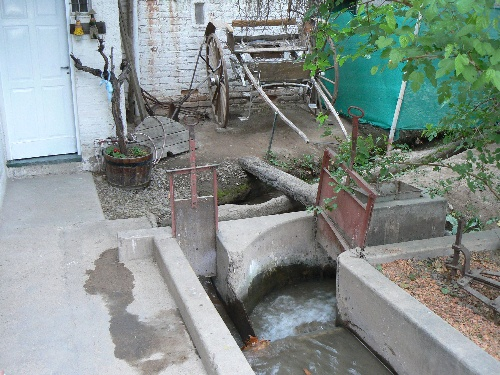

Flujo en canal abierto y la fórmula de Manning
Un río no tiene bomba. Lo único que empuja al agua es la gravedad, y lo único que la frena es el roce con el fondo y las orillas. Cuando esas dos cosas se equilibran, la velocidad queda fijada por la pendiente, la forma del cauce y su rugosidad. Calcularla importa para diseñar canales, puentes y mapas de inundación, y una de las herramientas más usadas es una fórmula empírica de apariencia modesta.
A diferencia de un caño a presión, un canal abierto tiene una superficie libre: arriba, el agua toca el aire. Lo que mueve el flujo no es una diferencia de presión impuesta, sino la componente del peso en la dirección de la pendiente. El nivel del agua se acomoda solo. Por eso, en lugar de una presión a la entrada, los datos del problema son la pendiente del cauce, la sección y el caudal (un resumen propio del planteo).
El Servicio Geológico de Estados Unidos (USGS) la describe como un método indirecto muy usado para calcular caudales o profundidades en cauces naturales [1][2]. En unidades del sistema internacional se escribe así:
Los informes del USGS usan la versión en pies, con un factor 1,486 delante [1]. Ese número no es física: es la raíz cúbica de los pies que tiene un metro (un cálculo propio). El coeficiente n no es un número puro, y la fórmula no es dimensionalmente homogénea, lo que delata su origen empírico (un comentario propio).
El radio hidráulico R es el área de la sección dividida por el perímetro mojado, es decir, la parte del contorno que toca el agua [3]. En esa razón está la idea física: el área mide cuánta agua hay para empujar, y el perímetro, cuánta superficie la frena. Un canal rectangular de 4 metros de ancho con 1 metro de agua tiene R = 4/6 ≈ 0,67 metros. En un río muy ancho y poco profundo, R es prácticamente igual a la profundidad (cálculos propios).
El ancho de la multitud: pensá en gente que camina por un pasillo rozando las paredes. La que va por el medio avanza libre; la que va pegada a los bordes, frena. Lo que cuenta es cuánta gente hay por cada metro de pared, y eso es lo que mide el radio hidráulico.
Toda la dificultad está en n. La guía del USGS de Arcement y Schneider da valores base: de 0,012 a 0,018 para un canal de concreto, y mucho mayores en cauces naturales de material grueso, hasta valores del orden de 0,07 [1]. Pero un río real no es un canal uniforme, y por eso la guía usa el procedimiento de Cowan, que suma correcciones a un valor base [1]:
Unas orillas muy erosionadas, por ejemplo, pueden aumentar n hasta en 0,02 [1]. El USGS incluso publica fotografías de tramos de río con n conocido, para comparar a ojo [1][3]. También ha medido valores en ríos reales a partir de caudales y perfiles observados, como en sus estudios en Illinois [2][4].
El efecto de n es directo. Tomemos un canal con R = 0,5 metros y una pendiente de 1 metro por kilómetro. Si es de concreto (n = 0,015), la velocidad da 1,3 m/s; con n = 0,030, la mitad. Un río de llanura con R = 3 metros, pendiente de 10 centímetros por kilómetro y n = 0,03 corre a 0,7 m/s (cálculos propios). El error en la velocidad es el mismo que el error en n: elegirlo mal es equivocarse en la altura de una crecida.
Una fórmula empírica con explicación: durante mucho tiempo, la fórmula de Manning fue solo un ajuste a datos. En 2002, G. Gioia y F. A. Bombardelli la dedujeron a partir de la teoría fenomenológica de la turbulencia: su deducción da el exponente correcto y justifica el uso de un solo parámetro, el radio hidráulico, para representar la geometría de la sección [5].
Los procedimientos del USGS se limitan a flujos de canal abierto en una dimensión [1]. La pendiente S es, en sentido estricto, la de la línea de energía, y para aplicar la fórmula a tramos naturales no uniformes se modifica esa pendiente de modo que refleje solo las pérdidas por fricción en el contorno [2]. Si el flujo cambia bruscamente, como en un resalto hidráulico, hace falta otro análisis.

En un río o un canal, la gravedad empuja y el contorno frena. La fórmula de Manning resume ese balance en tres ingredientes: la pendiente, el radio hidráulico y un coeficiente de rugosidad. El primero se mide, el segundo se calcula y el tercero se estima, combinando tablas, correcciones y fotografías. Es un buen ejemplo de una fórmula empírica que resistió el paso del tiempo y a la que después se le encontró una explicación física.
Pregunta para la comunidad: Con un mismo río desbordado, el agua se reparte entre el cauce principal y la llanura con árboles. ¿Por qué convendría calcular cada parte por separado, en vez de usar un único n para toda la sección?